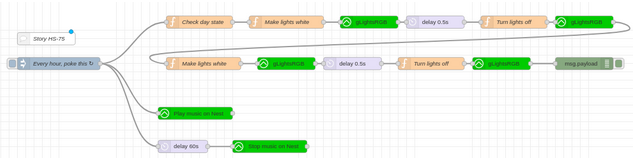
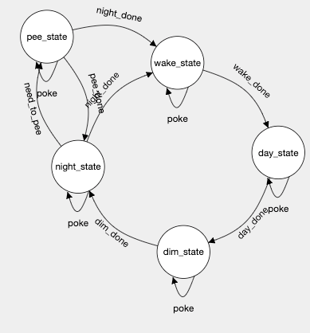
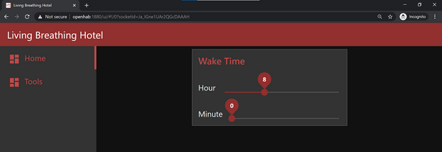
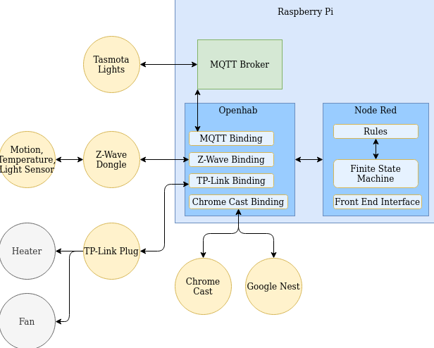

In a team of six, we developed and implemented a Raspberry Pi based, 'living and breathing' Smart Home for an external client. Check out the demo below for a visual explanation of the system.
The system was designed, as per client specifications, to run based on the natural circadian rhythm of humans. The first design step the team took was creating a circadian rhythm in conjunction with a number of smart home features, assuming the presence of as much technology as we needed. This included capabilities such as blue light being removed from lights roughly 3 hours before the occupant goes to sleep, amongst other things.
Having a plan for the day cycle of the smart home allowed us to request technology for the smart home from our client. This was a difficult stage for design for us, since we had to spend longer than we would have liked to figure out how to get our Raspberry Pi’s to communicate with the devices based on a schedule. Our initial approach included using Google Calendar to do this, with Python and JSON software reading and writing to OpenHAB rules based on changes in the system, all with the addition of a small front end application so the user could enter their wake up time, which sleep time can roughly be derived from.
There were a number of problems with this design, the main being scalability and feature implementation. Both looked extremely difficult to implement under the current structure. It was at this point the team started to look into solutions for scalability and came across Node-RED, which is a visual programming tool for wiring together hardware devices. A few team members started working with Node-RED and quickly realised it solved all the problems of our previous design. Major refactoring was done and everything was moved to Node-RED. The team were able to work in a development environment with XP sprints, team members adding smart home features (based on user stories) in Node-RED and integrating regularly using version control.
An example Node-RED feature can be seen below. This feature has the functionality of flashing the lights and playing one minute of music once per hour to encourage the occupant to get up and stretch. It has been included to demonstrate the basic functionality of Node-RED and its similarity to control flow diagrams. The logic follows as such: every hour, if it is day time, then send a signal to the lights to turn on for 0.5 seconds and turn off for 0.5 seconds twice as well as play some gentle music on the ChromeCast device for 60 seconds.
Later in development, more design additions came in order to support integration of all the separate features of the smart home in a holistic manner. The team designed a finite state machine (FSM), implemented in Node-RED, in order to achieve this. It will be explained in full later since the rest of the design needs to be outlined first.
The FSM can be seen and explained below.
The smart home hub, otherwise known as the Raspberry Pi, is composed of two main softwares: OpenHAB and Node-RED. This hub will control a series of devices based on the aforementioned circadian rhythm plan. The devices the system interacts with are lights, a motion/temperature/light sensor, TP-link plugs, a Chrome Cast and a Google Nest. All the devices can interface with their relevant OpenHAB bindings directly except for the lights and the sensor. The lights require an external piece of software to run in the Raspberry Pi, the MQTT Broker, to interact with OpenHAB. The sensor requires a Z-Wave Dongle plugged into the Raspberry Pi, which communicates between the two.
OpenHAB will send IoT signals through device’s respective communication channels based on rules outlined in Node-RED, which are all designed based on the circadian rhythm plan. Node-RED is a visual programming tool that works largely based on control flow. For example, there is a feature of the smart home that reminds occupants to get up and stretch once per hour throughout the day. The control flow is as follows: if it is the day time and if the time is the hour on the dot (e.g 9:00am, 10:00am…), then play gentle music for one minute and flash all lights in succession once. When the hour changes, Node-RED will interact with OpenHAB with the information about which devices will be changing behaviour and what that exact behaviour will be.
Node-RED also provides capability for a front end interface, which has been utilised to ask the user for their wake up time. This enables logic to allow the team to set the occupant a regular sleep time, which is at least eight and a half hours before the occupant’s wake up time. This interface can be seen below.
The method in which Node-RED’s features are continually checked and run is through the FSM. The FSM works like a global clock that keeps track and transitions between four states: day, night, dim and wake state. Whenever the system reaches one of these states, the relevant part of Node-RED is pinged and all features will be woken up to check if they need to be triggered. If any feature tries to trigger itself while the FSM is in the wrong state, it will be denied. There are separate flows set up in Node-RED that handle the transition between FSM states.
It should be noted that the system is easily scalable, meaning that additional features for existing devices or new devices can be incorporated into the smart home without requiring excessive setup on behalf of the developer.
Here is the final design of the smart home.
